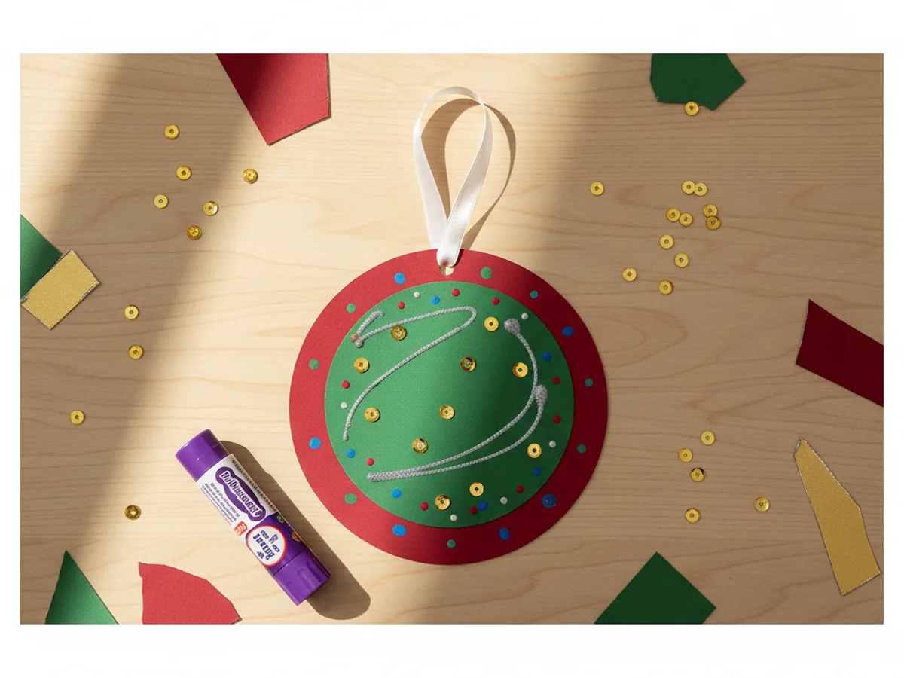
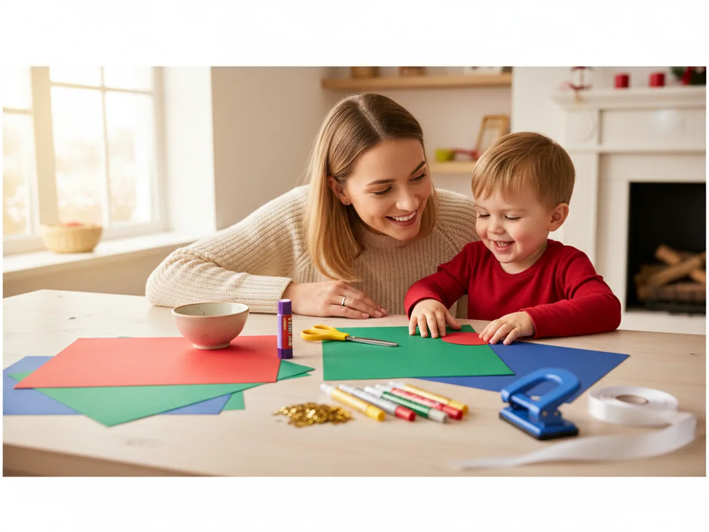
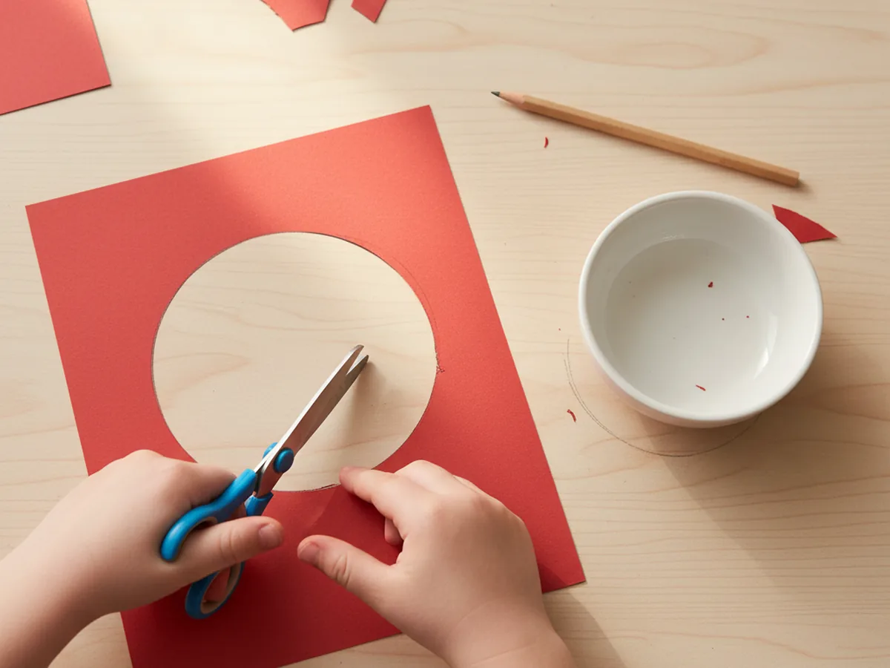
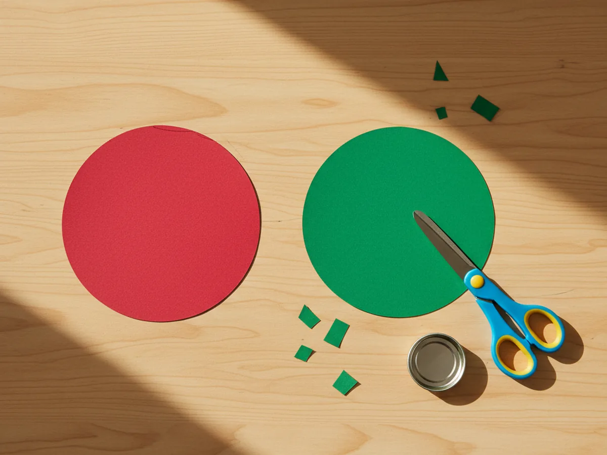
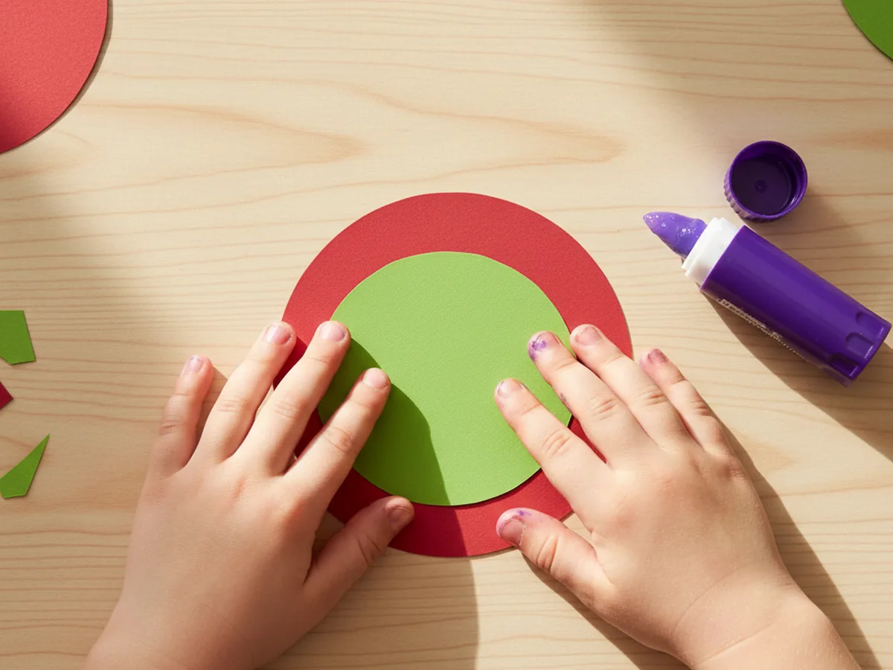
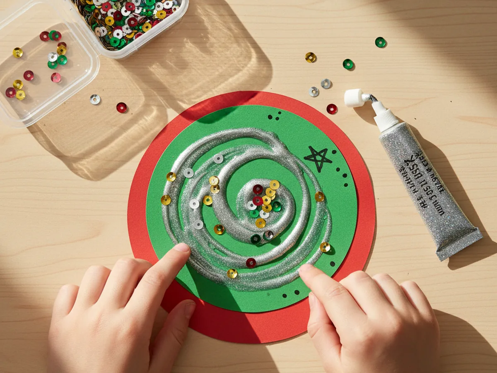
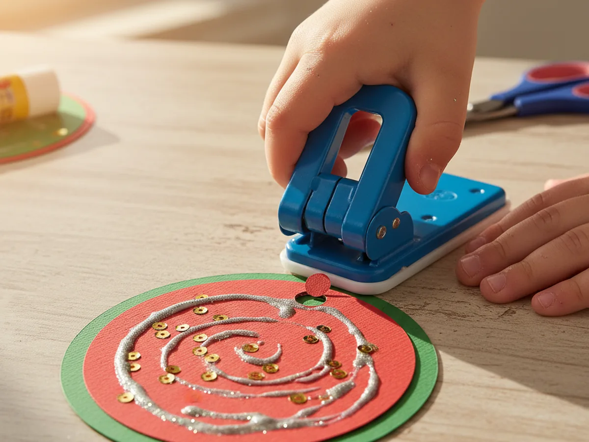
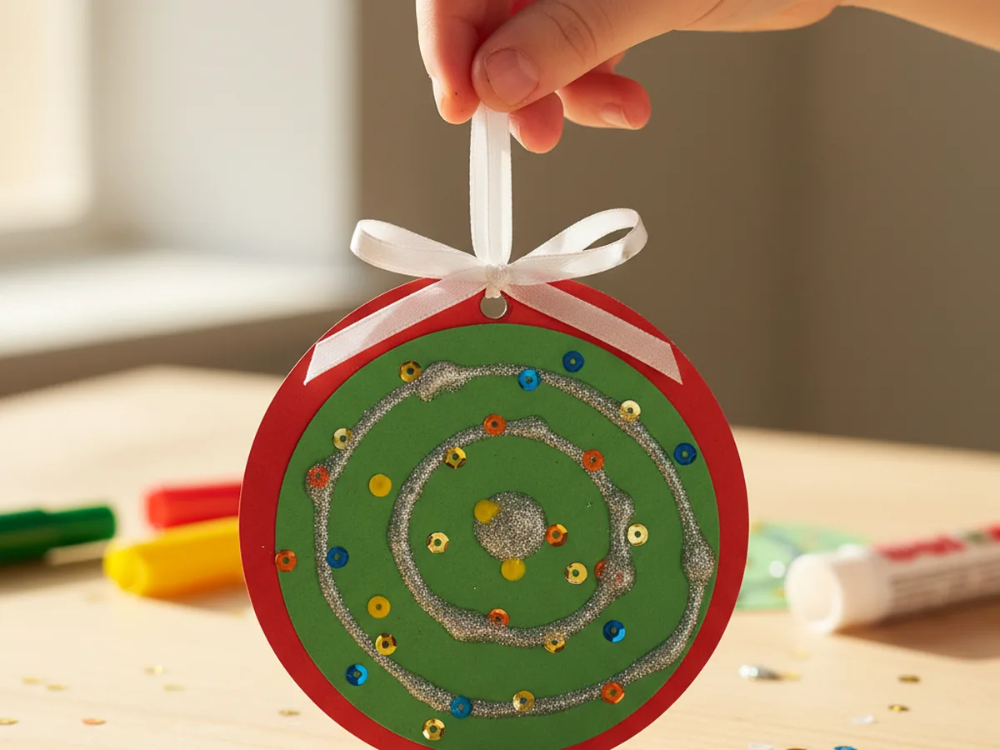

If you are looking for a sweet little holiday project to do with your kids this season, this paper ornament craft is one of the easiest and most rewarding ones around. It uses just a few sheets of colorful cardstock, a bit of ribbon, and whatever fun decorations you already have in the craft drawer. The finished ornament hangs beautifully on the Christmas tree, and most kids want to make three or four in a row once they see how simple it is. 🎄
Even toddlers as young as three can join in with help, and bigger kids can handle the whole thing on their own. The whole project takes about thirty minutes from start to finish, and the mess stays wonderfully manageable. Every handmade paper Christmas ornament ends up a little different, and that is exactly the charm of it.
Why Kids Love This Craft
There is something genuinely magical for a child about making their very own ornament for the tree. They get to see it hanging at eye level the whole season, and they will absolutely tell every visitor who comes over, "I made that one." For little ones especially, that small flash of pride is one of the loveliest things about this easy paper ornament craft.
This project also gives kids real practice with several fine motor skills in a relaxed, low-pressure way. Tracing around a small bowl, cutting out the circle, layering pieces neatly, threading a ribbon through a punched hole, all of these small actions strengthen little hands and build focus. It feels like play, but real learning is happening the whole time.
Best of all, the decorating step is wide open and forgiving. Sequins land wherever they land, glitter glue swirls go in any direction, and every choice is the right one. Kids who sometimes feel anxious about "doing it correctly" thrive with this kind of craft. It is a wonderful confidence booster, and the finished paper ornament craft always looks beautiful no matter how it comes together.

What You'll Need
Here is everything you need to make this paper ornament craft at home. Set the supplies out on the table before you sit down with your child so the whole activity flows smoothly from the start.
- Astrobrights Colored Cardstock (Classic 5-Color Assortment), gives you red, green, blue, yellow, and orange sheets for layered ornaments.
- Fiskars 5 Inch Blunt-Tip Kids Scissors, perfect for little hands cutting the circle shapes.
- Elmer's Disappearing Purple School Glue Sticks (30 Count), washable and easy to twist open for small fingers.
- Elmer's Washable Glitter Glue Pens (5 Pack), for adding sparkly swirls, dots, and tiny details to the ornament.
- Assorted Sequins and Spangles for Crafts, mixed shapes and colors for an instantly festive look.
- Single 1/4 Inch Hole Punch with Soft Grip Handle, easy for kids to squeeze and makes a clean hole at the top.
- ITIsparkle 3/8 Inch Double Faced Satin Ribbon (50 Yards), thin enough for the ornament loop and easy to tie.
- Crayola Broad Line Markers (10 Classic Colors), for drawing dots, stars, or simple patterns on the ornament.
- A small bowl or jar lid, for tracing a clean circle shape on the cardstock.
- A pencil, for lightly tracing the circles before cutting.
Step-by-Step Instructions
This paper ornament craft step by step is really as easy as it looks. Take it one piece at a time and let your little one do as much of the work as they comfortably can. ✨
Step 1: Trace and Cut the Base Circle
Choose your favorite color of cardstock for the base of the ornament. Red, green, and bright blue all look festive on the tree. Place a small bowl or a wide jar lid upside down on the cardstock and trace around it with a pencil to get a clean circle about four inches across. Then carefully cut along the line. This big circle becomes the back layer of your paper ornament craft.
If your child is on the younger side, you can do the tracing and let them focus on the cutting. Slightly wobbly circles are completely fine and even add a sweet handmade quality to the finished ornament.

Step 2: Cut a Smaller Layer Circle
Pick a contrasting cardstock color for the second layer. Green looks beautiful on a red base, gold or white pops on green, and any bright color works on blue. Use a smaller jar lid or a glass to trace a circle about three inches across, then cut it out. This smaller piece will sit centered on top of the bigger one to create the layered look that makes this cute paper ornament craft so charming.
If you would rather skip a second trace, you can free-cut the smaller circle a bit smaller than the first one. It does not have to be perfect, and the slight imperfection always looks lovely on the finished ornament.

Step 3: Glue the Layers Together
Run the glue stick generously across the back of the smaller circle, especially around the edges so they stay flat. Center it on top of the larger circle and press it down gently with flat fingers. Hold for about ten seconds so the glue grabs. Now you have a sturdy two-layer base for the ornament, and your simple paper ornament craft is already starting to look like a real tree decoration.
Encourage your child to press down all around the edge with their fingertips. That little step keeps the layers from peeling apart later and gives them a satisfying job to do.

Step 4: Decorate the Ornament
This is the part most kids have been waiting for. Squeeze a few small swirls of glitter glue across the surface of the smaller circle. Then sprinkle on a handful of sequins and gently press them into the glitter glue while it is still wet. Markers can add tiny dots, simple stars, or a little snowflake pattern around the edge. There is no wrong way to decorate this handmade paper ornament craft, and that freedom is exactly why kids love it.
If your little one wants to write a name, a year, or a tiny heart somewhere on the front, encourage it. Personalized ornaments make the loveliest keepsakes, and you will be glad to have the date written down years from now.

Step 5: Punch a Hole at the Top
Once the glitter glue has had a moment to set, take the single hole punch and squeeze it firmly through the top edge of the ornament, leaving about a quarter inch of paper above the hole. Younger children may need both hands to squeeze the punch, and that is perfectly fine. The handheld punches with soft grip handles are designed exactly for this kind of small craft job, and your kid-friendly paper ornament craft is almost ready to hang.
If the cardstock feels too thick to punch through both layers at once, do the punch before gluing the layers together, then line up the holes when you glue. Either way works beautifully.

Step 6: Thread the Ribbon Loop
Cut a piece of thin satin ribbon about eight inches long. Thread one end through the punched hole, line up both ends evenly, and tie a simple knot or a small bow at the top. Your paper ornament craft is officially finished and ready to hang on the Christmas tree, on a doorknob, or above the kitchen table where everyone can admire it.
Most kids want to test the ribbon by holding the finished ornament up right away, and that little moment of pride is honestly the best part of the whole project. Hand them the ornament, take a quick photo, and find a special branch on the tree together. 🎨

Variations to Try
Star or Heart Shaped Ornament: Instead of cutting circles, trace and cut a chunky star or a simple heart for the base. The decorating steps stay exactly the same, and the new shape adds variety if you are making a whole set of ornaments to give as gifts.
Photo Window Ornament: Cut a small window in the center of the smaller circle before gluing, then place a tiny photo of your child behind the opening so their face peeks through. This version turns the ornament into a sweet keepsake that families treasure for years.
Salt Dough Print Ornament: For an older child who wants more of a challenge, swap the cardstock for a small rolled circle of salt dough, press a fingerprint into it, bake it, then decorate it with paint and ribbon the same way. It uses the same simple steps with a more keepsake-worthy material.
Final Thoughts
This paper ornament craft is one of those quiet, lovely projects that gives you so much more than just a finished decoration. It gives you a slow half hour at the craft table with your child, a little stack of handmade memories for the tree, and a sweet ornament you will pull out year after year and smile at. 💝
If your family makes a batch of these together, I would love to see them. Snap a photo of your finished ornaments on the tree and pin this tutorial on Pinterest so other craft-loving mamas can find it easily. Happy crafting, friend!
More Crafts You'll Love
If your little one enjoyed this paper ornament craft, they will adore these other easy holiday paper projects too: